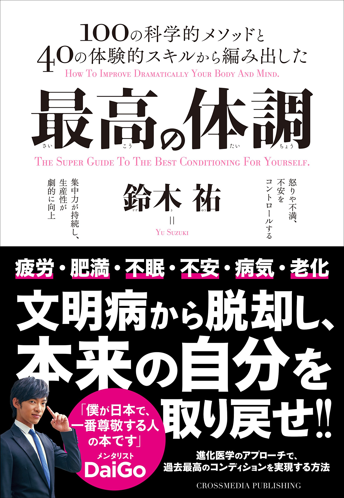
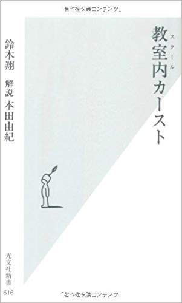

年に5,000本の科学論文を読み続けている著者・鈴木裕さんが執筆した最新図書「最高の体調」。著者は、現代人が体調不良に悩まされる・・・
最高の体調
日々の不調や不満には様々なレベルがあります。たんに朝起きれないという人もいれば、仕事の集中力が続かなくて作業が進まない。さらには怒りや不安がコントロールできずに人生が上手くいかない人、つねに体調不良に襲われている人、毎日の暮らしに張り合いがなく空虚な気持ちのまま暮らしている人など、症状や問題の深刻さには個人差があるはずです。まずは現代人が抱える問題の「共通項」をあぶりだし、すべてを柔軟に解決する汎用的なフレームワークを提供します。（著者：鈴木裕）
年に5,000本の科学論文を読み続けている著者・鈴木裕さんが執筆した最新図書「最高の体調」。著者は、現代人が体調不良に悩まされる・・・
続きを読む

フェルマの最終定理
言葉にしようのない、美しい瞬間でした。
数学界最大の超難問はどうやって解かれたのか?3世紀にわたって苦闘した天才数学者たちの挫折と栄光、証明に至るまでを描く感動の人間ドラマ。（著者：サイモン シン 翻訳：青木 薫 ）フェルマーの最終定理という名前、読者の方も一度はどこかで耳にしたことがあるのではないだろうか？この問題は17世紀の数学者ピエール・ド・フェルマーによって残された問題だが、その問いは以下のようなものである。
続きを読む

日本辺境論
日本人とは辺境人である―「日本人とは何ものか」という大きな問いに、著者は正面から答える。常にどこかに「世界の中心」を必要とする辺境の民、それが日本人なのだ、と。日露戦争から太平洋戦争までは、辺境人が自らの特性を忘れた特異な時期だった。丸山眞男、澤庵、武士道から水戸黄門、養老孟司、マンガまで、多様なテーマを自在に扱いつつ日本を論じる。読み出したら止らない、日本論の金字塔、ここに誕生。（著者：内田 樹）
本書は日本の地政学的観点から、日本という辺境国を多方面から分析しているが、何故日本人は特異な辺境民へと成長していったかについて・・・
続きを読む

動的平衡
哲学する分子生物学者が問う「命の不思議」。生物を構成する分子は日々入れ替わっている。私たちは「私たちが食べたもの」にすぎない。すべての生物は分子の「流れ」の中の「淀み」なのである。しかし、その肉体、タンパク質の集合体に、なぜ「いのち」が宿るのか。いったい、生命とは何なのか。哲学する分子生物学者が永遠の命題に挑む!（著者：福岡 伸一）
『動的平衡』は、「生命とは何か？」という問いに深く切り込んだ福岡さんのベストセラー著書『生物と無生物の間』をもっとコンパクトに仕上げた図書、というのが個人的な感想だが、そのテーマは、ヒトと病原体の戦い・・・
続きを読む

大気を変える錬金術
物質変換の威力,あるいは魔力。人工窒素固定、化学兵器、IGファルベンを生みだしたボッシュとハーバー。彼らが人類史上に果たした役回りは、ロバート・オッペンハイマーのそれにも比べうる。人と炭素の未来を映しだす、窒素の物語。（著者：トーマス・ヘイガー 翻訳：渡会圭子）
”これは空気をパンに変える方法を発明した二人の男の物語である”
その二人の男の名前は、カール・ボッシュとフリッツハーバー。この人物の名前と功績を存じ上げていない方は多いと思うが・・・
続きを読む

本書は、スクールカーストというクラス内で発生するヒエラルキーの原因を、各ステータスにランク付けされた生徒が会話形式でその理由を話していくが、その内容はあまりにも生々しい。そもそも、スクールカーストの問題点は・・・
教室内(スクール)カースト
本書では、これまでのいじめ研究を参照しながら、新たに学生や教師へのインタビュー調査を実施。教室の実態や生徒・教師の本音を生々しく聞き出している。生徒には「権力」の構造として映るランク付けが、教師にとっては別の様相に見えていることも明らかに…。（著者：鈴木 翔）
本書は、スクールカーストというクラス内で発生するヒエラルキーの原因を、各ステータスにランク付けされた生徒が会話形式でその理由を話していくが、その内容はあまりにも生々しい。そもそも、スクールカーストの問題点は・・・
続きを読む

理性の限界
アロウ、ハイゼンベルク、ゲーデルらの思索を平易に解説しつつ、人類が到達した「選択」「科学」「知識」の限界論の核心へ。 知的刺激にみちた、「理性の限界」をめぐる論理学ディベート（著者：高橋 昌一郎 ）
本書は、タイトル『理性の限界』と書かれているように、人間の理性では越えられないテーマの限界について綴られている。そのテーマは、選択・科学・知識といった、我々が理性的に解釈可能だと思われる学問領域を対象にしているが、著書では、司会者・会社員・数理経済学者・哲学史家・運動選手・生理学者など、計36人にも及ぶ登場人物が、、身近な疑問を掘り下げ・・・